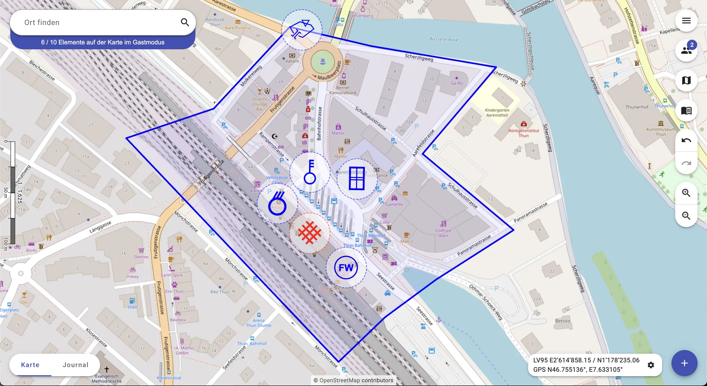
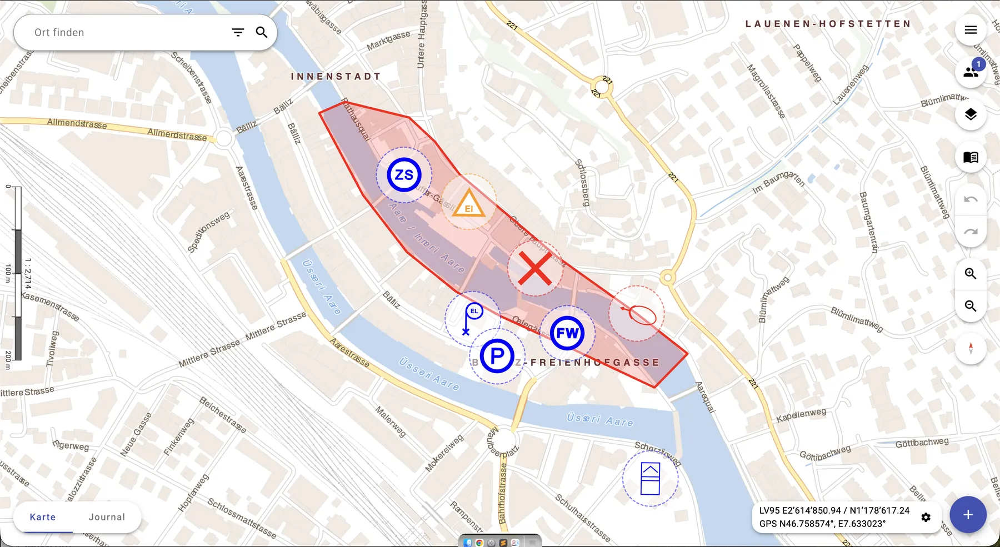
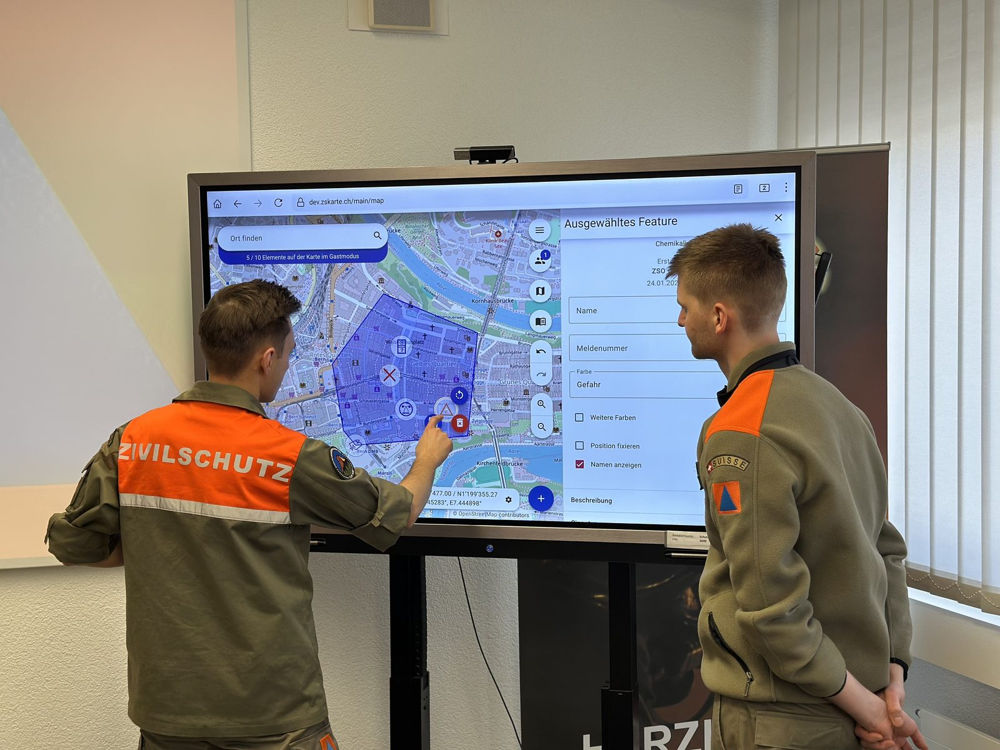

Die ZS-Karte ersetzt Papierkarte, Stift und Folie durch eine überall verfügbare, digitale Lagekarte – entwickelt von der Miliz für die Miliz. Einfach zu bedienen, auch ohne Vorkenntnisse.
Gastzugang ohne Registrierung · Läuft im Browser · Keine Installation

Die Zivilschutz-Karte (kurz: ZS-Karte) ist eine Software für die digitale Lageführung bei Grossereignissen und Schadenlagen. Ereignisse werden schnell erfasst, ortsunabhängig abgerufen und als fertige Karte exportiert.
Von Beginn an stand die Miliztauglichkeit im Zentrum: Wer einen Computer bedienen kann, arbeitet ohne lange Schulung direkt an der Lage mit.

Die Elektronische Lageverarbeitung (ELV) verbindet die Lagekarte (ELD) und das Journal zu einem durchgängigen Führungswerkzeug.
Auf der elektronischen Lagedarstellung (ELD) zeichnen Sie Ereignisse, Sperrungen, Dispositive und offizielle Signaturen ein – die Lage ist jederzeit aktuell und für alle Beteiligten sichtbar.
Das Journal bildet den Meldefluss am Kommandoposten (KP) digital ab: eingehende und ausgehende Meldungen werden strukturiert erfasst, bleiben nachvollziehbar und lassen sich exportieren.
Ereignisse, Journaleinträge und Signaturen sind in Sekunden auf der Karte – statt mit Stift und Folie.
KP-Front und KP-Rück arbeiten gleichzeitig an derselben Lage. Änderungen erscheinen sofort bei allen.
Fällt das Internet aus, läuft die ZS-Karte weiter. Karten und Einträge synchronisieren automatisch, sobald die Verbindung zurück ist.
Fertige Lagekarten lassen sich drucken, als CSV oder als Datei exportieren und jederzeit weiterverwenden.
Grosser Funktionsumfang – und trotzdem miliztauglich.
Dieselbe Lage, verschiedene Ansichten: Signaturen, Sperrungen und Dispositive bleiben immer gleich lesbar.
Ob im Ausbildungszentrum oder am Schadenplatz: Die ZS-Karte läuft auf jedem PC mit Browser – mit Maus und Tastatur so vertraut wie eine Landkarte.

Die ZS-Karte ist ein Open-Source-Projekt unter der MIT-Lizenz und wird seit Jahren gemeinsam weiterentwickelt. Der Quellcode ist auf GitHub frei zugänglich.
Weil das Projekt breit auf mehrere Organisationen abgestützt ist, bleibt es unabhängig von Einzelpersonen – und damit agil, flexibel und nachhaltig.
Projekt auf GitHub ansehen«Die ZS-Karte zeigt, wie technologische Innovation und die Stärken des Schweizer Milizsystems zusammenkommen. Sie macht den Zivilschutz effizienter und moderner.»
Manuel Schenk, Projektleiter ZS-Karte
Über 70 Organisationen aus 16 Kantonen nutzen die ZS-Karte: Aargau, Appenzell Ausserrhoden, Basel-Landschaft, Bern (flächendeckend), Freiburg, Luzern, Obwalden, Schaffhausen, Solothurn, St. Gallen, Tessin, Thurgau, Waadt, Wallis, Zug und Zürich – vor allem Zivilschutzorganisationen, Ausbildungszentren und weitere Partner im Bevölkerungsschutz.
Auf zskarte.ch die Funktionen ohne Registrierung ausprobieren. Der Gastzugang läuft eine Stunde.
Mit Registrierung: unbegrenzter Zugriff und proaktive Infos zu Neuerungen.
Voraussetzung: PC mit Browser und Internet (Offline-Betrieb möglich). Maus und Tastatur empfohlen.
Betrieb und Support werden professionell durch die EvoSys AG aus Thun sichergestellt.
Wünsche und Verbesserungen. Jede Rückmeldung wird im System automatisch zur Bearbeitung erfasst.
Testen Sie die ZS-Karte jetzt unverbindlich – ohne Installation, direkt im Browser.